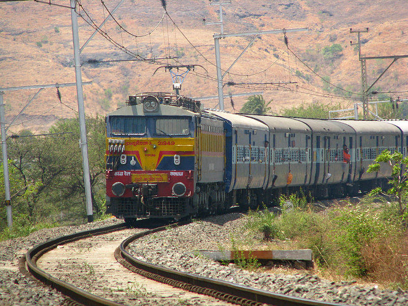
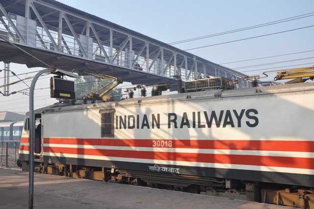
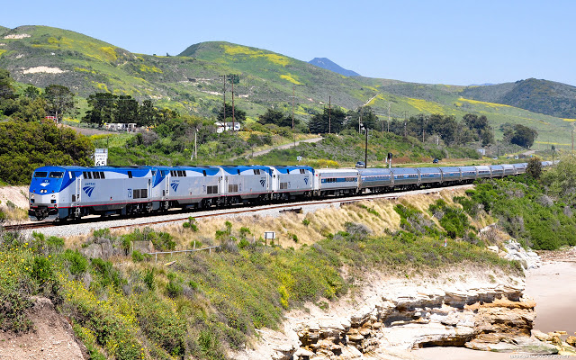
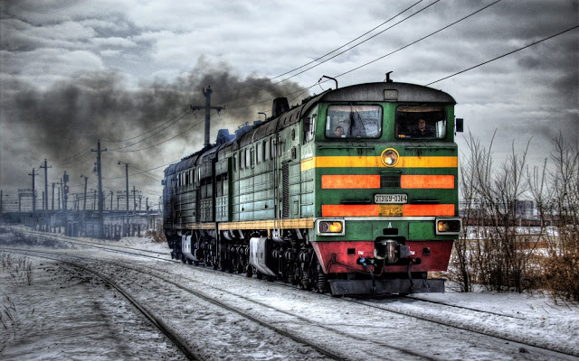
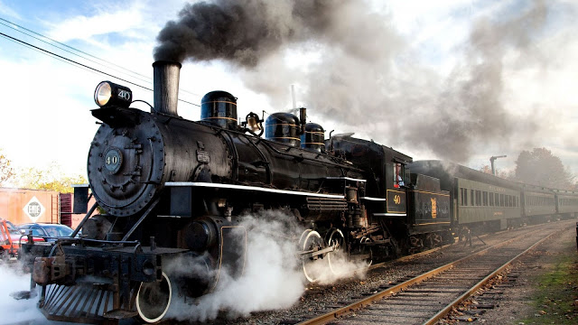
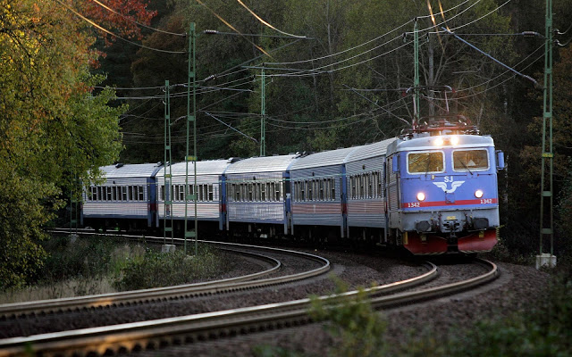
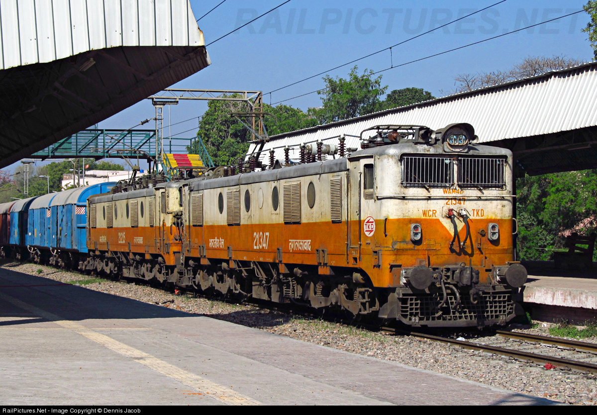

|  |





|
 |
Indian Railways is one of the biggest rail network in the world. It provides comfortable journey for passengers through out India. Every day Indian Railways sells millions of railway tickets to millions of passengers. Considering the number of booking counters available and the long queues at the booking counters, it takes a lot of time for the passenger to get a railway ticket reserved or canceled. The time consuming process of reservation and cancellation is reduced with the website which provides details about all the trains, reservations of train ticket, cancellations of train ticket and some more features as an one step process.